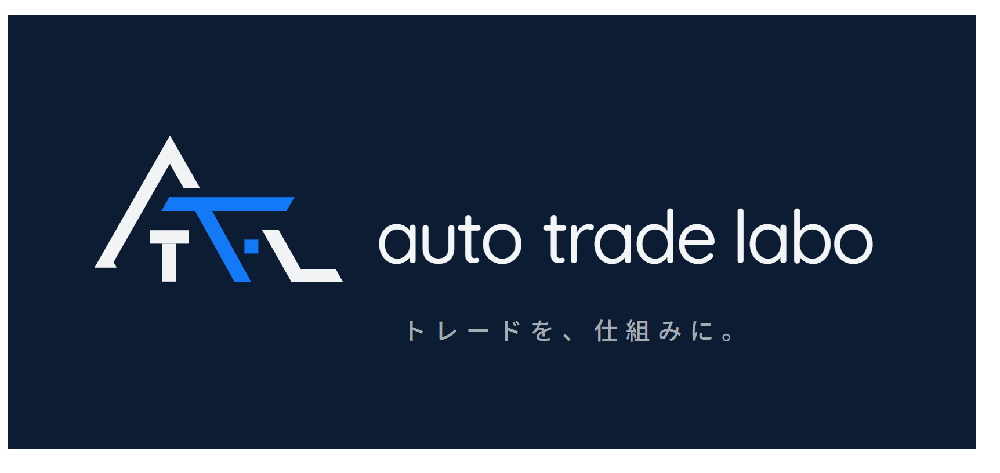

FX EA 紹介倉庫
GOLD（XAUUSD）自動売買 EA 配布・情報サイト
EA の紹介
配布中 EA の一覧・各 EA の詳細情報・バックテスト結果
›
国内 FX と海外 FX のメリット・デメリット
海外 FX はホントに危険？ 双方の特徴をわかりやすく解説
›
リスク管理
資金管理・証拠金維持率・経済指標との付き合い方
📅
経済指標カレンダーはこちら
›
EA の配布・利用条件
口座番号の安全性・無料配布の条件・公式 LINE のご案内
›